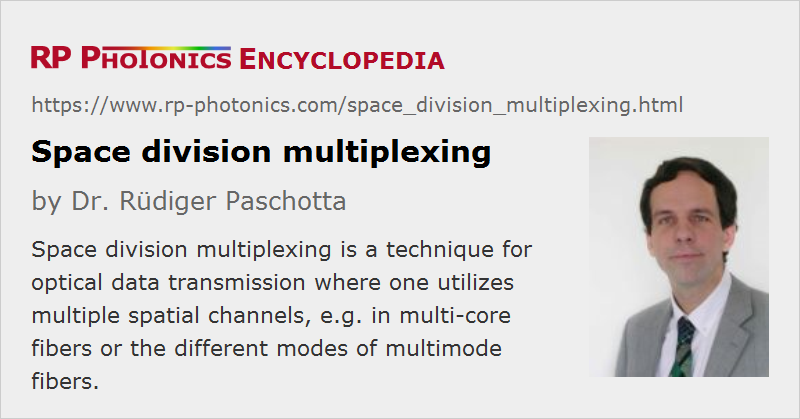

Space Division Multiplexing
Acronym: SDM
Definition: a multiplexing technique for optical data transmission where multiple spatial channels are utilized
Alternative term: spatial division multiplexing
More general term: optical multiplexing
Category: lightwave communications
How to cite the article; suggest additional literature
Author: Dr. Rüdiger Paschotta
Optical data transmission, particularly in the form of optical fiber communications, is used to transmit data at bit rates which have been enormously increased over the last few decades. An important aspect is always the use of certain multiplexing techniques for improving transmission capacities, preferably without laying down additional fibers. Most common are wavelength division multiplexing (WDM, using multiple wavelength channels) and time division multiplexing (TDM, interleaving channels temporally). Another option – topic of this article – is space division multiplexing, where one utilized multiple spatial channels. It is also called spatial division multiplexing (SDM). As the potentials of WDM have largely been realized, SDM will be needed for further substantial increases of transmission capacities, avoiding the expected shortage of capacity (“capacity crunch”). It is considered to be particularly needed for long-haul communications (e.g. through submarine communications cables), but later on also for applications on smaller scales such as regional networks. Certain forms of space division multiplexing will of course be used in conjunction with other techniques like wavelength division multiplexing, rather than as a replacement for those.
In free-space optical communications, one could simply utilize multiple laser beams in parallel for transmitting data at a higher overall bit rate. Unfortunately, that method does not scale well; the number of practically usable beams is limited, and the cost increases nearly linearly with the number of transmission lines. In optical fiber communications, however, there are various interesting options, discussed in the following sections.
Fiber Division Multiplexing
The technical simplest approach is to use multiple optical fibers for obtaining higher overall bit rates. One essentially multiplies most of the hardware for transmitting information via multiple parallel information channels. The used components are essentially the same as for single fiber-optic links. Only to a moderately extent, one tries to reduce the cost by using a single component for multiple channels:
- One may use a single laser diode in conjunction with fiber splitters for pumping multiple fiber amplifiers.
- Multiple fibers can be integrated into a single fiber cable. For small distances, fiber ribbons may be used.
- Multiple laser transmitters maybe he realized as a laser array on a single chip, e.g. a VCSEL array.
- Multiple receivers may also be combined on a single chip (→ photonic integrated circuits), and some of the electronics can be shared between the channels.
The disadvantage of this approach is that the cost still rises substantially for an increasing number of transmission channels. However, the development is relatively simple, and no essential new optical components are required.
Multi-core Fibers
A potentially more economical solution – particularly for large transmission distances and a substantial number of transmission channels – is to use a single fiber containing multiple fiber cores. Such fibers are called multi-core fibers [21]. Each individual core can provide one communication channel.
In the simplest situation, the fiber cores are sufficiently separated from each other such that there is negligible light coupling between the fibers, thus negligible cross-talk between the channels. The signal processing for such uncoupled SDM fibers is relatively simple. However, that requirement severely limits the number of fiber cores, as their distance needs to be substantial. One may try to “insulate” relatively closely spaced cores with refractive index trenches. Alternatively, one may use fibers with larger cladding diameter, but that approach has serious disadvantages, particularly the increased tendency for breaking fibers even for moderate bend radii, but also difficulties for fiber interfaces, e.g. with fusion splicing.
Due to the limitations of uncoupled fibers, there is a tendency to use fibers with more cores, put so closely together that a significant amount of coupling between the fibers occurs (coupled SDM fibers), and supermodes are formed. In order to deal with the resulting cross-talk issue, one uses refined MIMO techniques (multiple inputs / multiple outputs), based on electronic signal processors, which are in principle similar to those used in wireless data transmission (e.g. for WLAN with multiple antennas). As the group velocities of the different fiber cores are quite similar, and a moderate amount of coupling does not lead to a substantial spread of group velocities, MIMO receivers with limited complexity are sufficient to obtain high bit rates with sufficiently small bit error rates.
Various technical challenges are encountered. The perhaps smallest one is the fabrication of multi-core fibers. Although traditional techniques of fabricating fiber preforms can not be used, there are alternative solutions e.g. based on photonic crystal fibers which are very flexible in that respect. Once a multi-core fiber preform has been made, it can be drawn into fiber in traditional fiber drawing towers.
Connecting Multi-core Fibers
Connecting multi-core fibers is obviously more difficult than for standard fibers: the fibers need to be rotationally aligned such that the core positions match. For example, special provisions are needed to ensure the correct rotational orientation when fusion splicing multi-core fibers. Depending on the system architecture, it may even be necessary to ensure that the association between input and output cores is maintained e.g. when a connection is released and made again. Special types of fiber connectors are available which e.g. contain pins on one side to ensure that plugging in is possible only with the correct rotational orientation.
Spatial Multiplexers
It is also necessary to couple multi-core fibers to separate single-mode fibers, either for combining input signals from such fibers or for distributing output signals to separate photodetectors in a telecom receiver. Spatial multiplexers of different kinds have been developed for such purposes:
- There are miniature bulk-optical systems containing elements like lenses and prisms for launching light from separate fibers into the cores of a multi-core fiber.
- Another solution is to use laser-inscribed 3D waveguides in a small glass block, which connect different cores of a MCF with the cores of a set of output or input fibers which are arranged in a linear sequence [2].
Fiber Amplifiers for Multi-core Fibers
Communications systems require fiber amplifiers for maintaining sufficient channel powers over large transmission distances. When using multi-core fibers, one requires special multi-core fiber amplifiers [6, 24]. They need to be optimized such that the obtained amplifier gain is sufficiently uniform over the spatial modes; in other words, the differential gain must be small.
Although the design of such amplifiers is somewhat more difficult, it is obviously economical and also more energy-efficient to use one multi-core amplifier instead of multiple single-mode amplifiers, each one with a separate active fiber, pump source, couplers etc.
Multimode / Few-mode Fibers
It is also possible to realize space division multiplexing with multimode fibers, where each spatial mode is used for one transmission channel. Typically, one uses few-mode fibers, having a quite limited number of modes, for example 3, 6, 7, 12 or 19. The specific term for that technique is mode division multiplexing.
When comparing that approach with using multi-core fibers, there are various important differences:
- The used fibers are simpler to make. In some cases, one may even use fibers of existing multimode fiber-optic links, where previously one has used only a single spatial channel.
- Connecting multimode fibers e.g. with fiber connectors or splices is much easier than coupling multi-core fibers, where the cores of the two fibers need to be aligned. However, the quality requirements for fusion splicing are higher than for ordinary multimode fiber communications, because mode-dependent loss must be minimized.
- Interfacing to single fibers is technically different; special spatial mode multiplexers are required. They can be realized with certain phase plates or as photonic lanterns, for example.
- The cross-talk between different fiber modes is more substantial than that between separate cores. Besides, there are significant differences in group velocity between different modes. Therefore, a MIMO receiver (digital signal processor) with higher complexity is required. One may also optimize few-mode fibers such that their spread of group velocities (modal differential group delay, MDGD) is minimized – typically by using a graded-index profile. At the same time, one should try to minimize mode coupling.
- Again, special fiber amplifiers are required, which provide sufficiently similar gainfully different fiber modes [8].
When comparing with the use of multi-core fibers, the ease a trade-off: the optical set up is simpler with multimode fibers, but on the other hand one requires more sophisticated electronics.
Multi-core Few-mode Fibers
It is also possible to combine the two approaches described above: using a firewall which contains multiple cores, each one having several spatial modes.
Availability of SDM Hardware
In recent years, a lot of new hardware has been developed for space division multiplexing. Partially, such items are commercially available:
- There are various kinds of SDM fibers, particularly multi-core fibers and few-mode fibers, partially with minimized modal differential group delay. Fiber cables containing such fibers are also available.
- There are various kinds of spatial multiplexers, mode connectors and the like.
- Special erbium-doped fiber amplifiers for few-mode fibers and for multi-core fibers have been developed.
- Further, there are fusion splicers which are suitable for splicing multi-core fibers, sometimes also with increased cleaning diameters.
Suppliers
The RP Photonics Buyer's Guide contains 3 suppliers for space division multiplexing devices.
Questions and Comments from Users
Here you can submit questions and comments. As far as they get accepted by the author, they will appear above this paragraph together with the author’s answer. The author will decide on acceptance based on certain criteria. Essentially, the issue must be of sufficiently broad interest.
Please do not enter personal data here; we would otherwise delete it soon. (See also our privacy declaration.) If you wish to receive personal feedback or consultancy from the author, please contact him e.g. via e-mail.
By submitting the information, you give your consent to the potential publication of your inputs on our website according to our rules. (If you later retract your consent, we will delete those inputs.) As your inputs are first reviewed by the author, they may be published with some delay.
Bibliography
| [1] | S. Berdagué and P. Facq, “Mode division multiplexing in optical fibers”, Appl. Opt. 21 (11), 1950 (1982), doi:10.1364/AO.21.001950 |
| [2] | R. R. Thomson et al., “Ultrafast-laser inscription of a three dimensional fan-out device for multicore fiber coupling applications”, Opt. Express 15 (18), 11691 (2007), doi:10.1364/OE.15.011691 |
| [3] | R. W. Tkach, “Scaling optical communications for the next decade and beyond”, Bell Labs Tech. J. 14 (4), 3 (2010), doi:10.1002/bltj.20400 |
| [4] | F. Yaman et al., “Long distance transmission in few-mode fibers”, Opt. Express 18 (12), 13250 (2010), doi:10.1364/OE.18.013250 |
| [5] | B. Zhu et al., “70-Gb/s multicore multimode fiber transmissions for optical data links”, IEEE Photonics Technol. Lett. 22 (22), 1647 (2010), doi:10.1109/LPT.2010.2070490 |
| [6] | K. S. Abedin et al., “Amplification and noise properties of an erbium-doped multicore fiber amplifier”, Opt. Express 19 (17), 16715 (2011), doi:10.1364/OE.19.016715 |
| [7] | B. Zhu et al., “112-Tb/s Space-division multiplexed DWDM transmission with 14-b/s/Hz aggregate spectral efficiency over a 76.8-km seven-core fiber”, Opt. Express 19 (17), 16665 (2011), doi:10.1364/OE.19.016665 |
| [8] | Y. Jung et al., “First demonstration and detailed characterization of a multimode amplifier for space division multiplexed transmission systems”, Opt. Express 19 (26), B952 (2011), doi:10.1364/OE.19.00B952 |
| [9] | T. Sakamoto et al., “Transmission over large-core few-mode photonic crystal fiber using distance-independent modal dispersion compensation technique”, Opt. Express 19 (26), B478 (2011), doi:10.1364/OE.19.00B478 |
| [10] | R. Ryf et al., “Mode-division multiplexing over 96 km of a few-mode fiber using coherent 6 × 6 MIMO processing”, J. Lightwave Technol. 30 (4), 521 (2012), doi:10.1109/JLT.2011.2174336 |
| [11] | J. D. Love and N. Riesen, “Mode-selective couplers for few-mode optical fiber networks”, Opt. Lett. 37 (19), 3990 (2012), doi:10.1364/OL.37.003990 |
| [12] | Q. Kang et al., “Accurate modal gain control in a multimode erbium doped fiber amplifier incorporating ring doping and a simple LP01 pump configuration”, Opt. Express 20 (19), 20835 (2012), doi:10.1364/OE.20.020835 |
| [13] | V. A. J. M. Sleiffer et al., “73.7 Tb/s (96 × 3 × 256-Gb/s) mode-division-multiplexed DP-16QAM transmission with inline MM-EDFA”, Opt. Express 20 (26), B428 (2012), doi:10.1364/OE.20.00B428 |
| [14] | D. J. Richardson, J. M. Fini and L. E. Nelson, “Space-division multiplexing in optical fibers”, Nat. Photonics 7 (5), 354 (2013), doi:10.1038/nphoton.2013.94 |
| [15] | A. Sano et al., “409-Tb/s + 409-Tb/s crosstalk suppressed bidirectional MCF transmission over 450 km using propagation-direction interleaving”, Opt. Express 21 (14), 16777 (2013), doi:10.1364/OE.21.016777 |
| [16] | T. Hayashi et al., “Physical interpretation of intercore crosstalk in multicore fiber: Effects of macrobend, structure fluctuation, and microbend”, Opt. Express 21 (5), 5401 (2013), doi:10.1364/OE.21.005401 |
| [17] | P. Sillard, M. Bigot-Astruc and D. Molin, “Few-mode fibers for mode-division-multiplexed systems”, J. Lightwave Technol. 32 (16), 2824 (2014), doi:10.1109/JLT.2014.2312845 |
| [18] | P. J. Winzer, “Making spatial multiplexing a reality”, Nat. Photonics 8 (5), 345 (2014), doi:10.1038/nphoton.2014.58 |
| [19] | R. G. H. van Uden et al., “Ultra-high-density spatial division multiplexing with a few-mode multicore fibre”, Nature Photonics 8, 865 (2014), doi:10.1038/nphoton.2014.243 |
| [20] | Y. Jung et al., “Cladding pumped few-mode EDFA for mode division multiplexed transmission”, Opt. Express 22 (23), 29008 (2014), doi:10.1364/OE.22.029008 |
| [21] | K. Saitoh and S. Matsuo, “Multicore fiber technology” (tutorial review), J. Lightwave Technol. 34 (1), 55 (2016) |
| [22] | H. Chen et al., “Integrated cladding-pumped multicore few-mode erbium-doped fibre amplifier for space-division-multiplexed communications”, Nature Photonics 10, 529 (2016), doi:10.1038/nphoton.2016.125 |
| [23] | G. Lopez-Galmiche et al., “Few-mode erbium-doped fiber amplifier with photonic lantern for pump spatial mode control”, Opt. Lett. 41 (11), 2588 (2016), doi:10.1364/OL.41.002588 |
| [24] | S. Jain et al., “32-core erbium/ytterbium-doped multicore fiber amplifier for next generation space-division multiplexed transmission system”, Opt. Express 25 (26), 32887 (2017), doi:10.1364/OE.25.032887 |
See also: optical data transmission, optical fiber communications, multi-core fibers, few-mode fibers, multimode fibers, mode division multiplexing
and other articles in the category lightwave communications
|  |
If you like this page, please share the link with your friends and colleagues, e.g. via social media:
These sharing buttons are implemented in a privacy-friendly way!